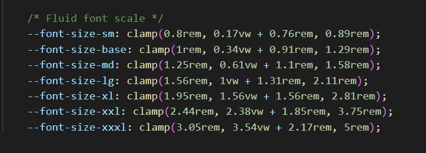

Learning Goals
At the end of this Tutorial, you will be able to:
- Understand the concept of fluid typography in web design.
- Recognise that, for fluid typography to work, you must choose a minimum and a maximum viewport (screen) width.
- Apply Mike Riethmuller’s fluid typography equation to the CSS styles that control the headings, paragraphs and other text elements in a web page.
- Understand that the smallest and largest font sizes are the only two values you need to change in the typographic equation.
About fluid typography
Fluid typography means that the font sizes of text – headings, paragraphs, bulleted lists, menu items – on a web page ‘scale’ (shrink or expand) smoothly according to the width of the user’s device viewport.
Here are some examples of web pages that did not use fluid typography to scale font sizes correctly for mobile phone screens.

The animated gif below is taken from an article on the CSS Tricks website that features the widely-used implementation of the fluid typography approach developed by Australian web designer Mike Riethmuller.

The modern approach is to a type scale such as the following:
You can then include the preset values as custom properties in your stylesheets. See the example below.
